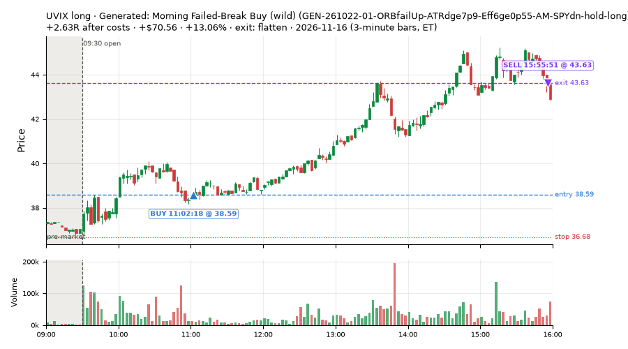
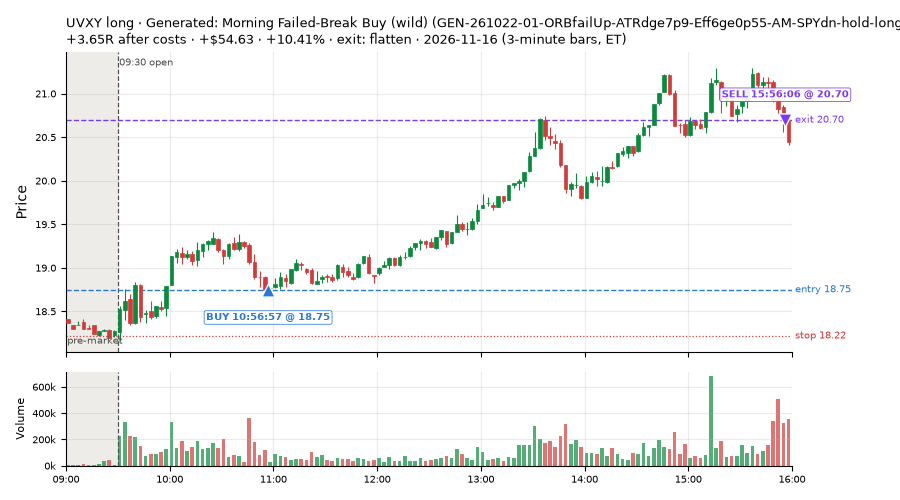
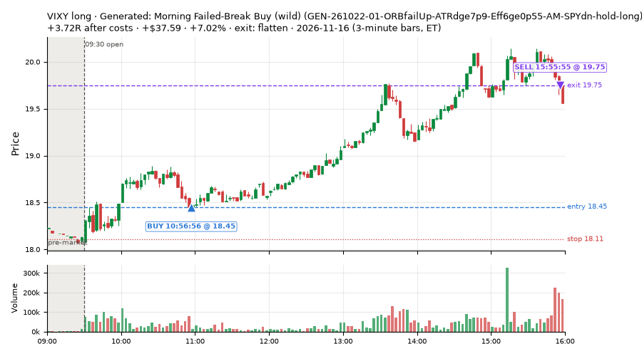
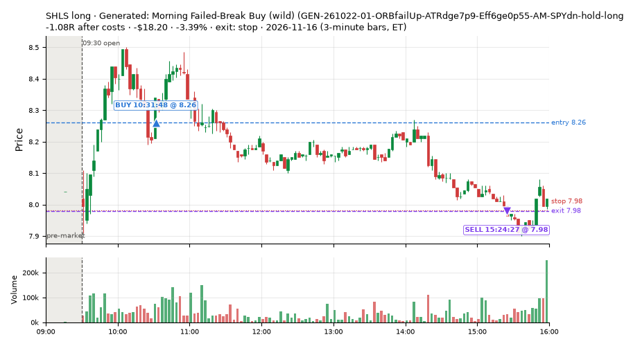
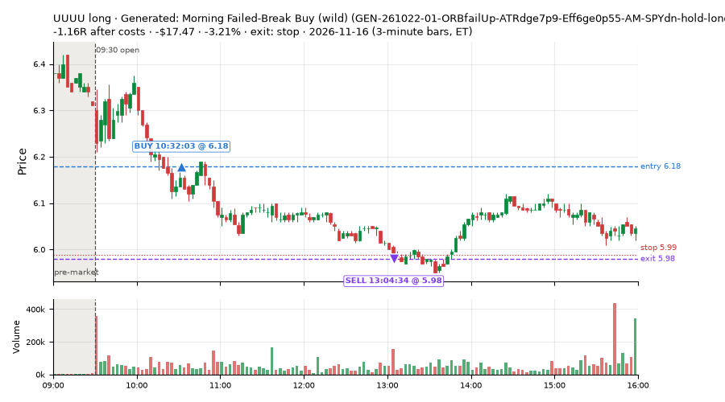
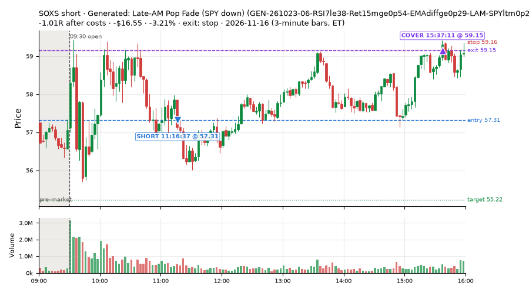
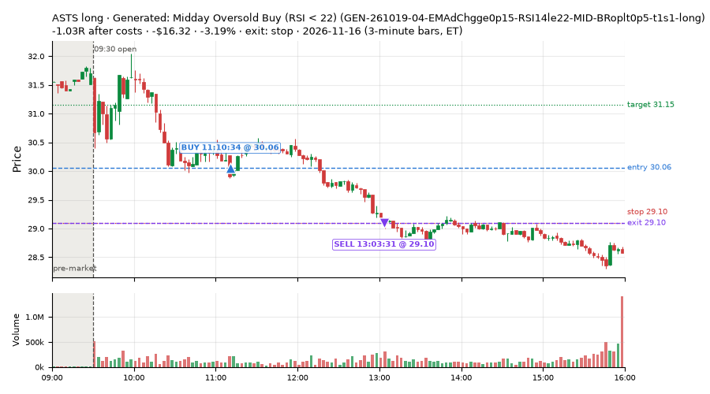
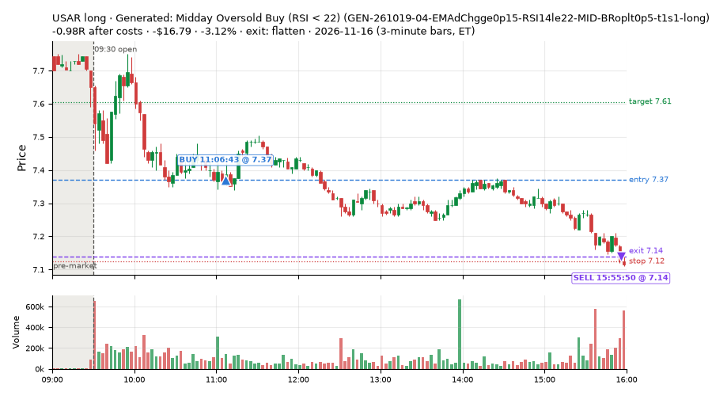

66 trades · win rate 55% · P/L $158.12
PROBATION: no live setup has passed both locked test periods. 10 owner-directed setups added 2026-10-08 (MarcoFlow top 5 + 5 new), untested live. RW6G1 (RW6 + VWAP band guard) added 2026-10-09, probation.

| Symbol | Setup | Side | In | Out | Entry | Exit | Exit reason | % gained | P/L |
|---|---|---|---|---|---|---|---|---|---|
| UVIX | Generated: Morning Failed-Break Buy (wild) (GEN-261022-01-ORBfailUp-ATRdge7p9-Eff6ge0p55-AM-SPYdn-hold-long) | long | 11:02 | 15:55 | 38.59 | 43.63 | flatten | +13.06% | $70.56 |
| UVXY | Generated: Morning Failed-Break Buy (wild) (GEN-261022-01-ORBfailUp-ATRdge7p9-Eff6ge0p55-AM-SPYdn-hold-long) | long | 10:56 | 15:56 | 18.75 | 20.70 | flatten | +10.41% | $54.63 |
| VIXY | Generated: Morning Failed-Break Buy (wild) (GEN-261022-01-ORBfailUp-ATRdge7p9-Eff6ge0p55-AM-SPYdn-hold-long) | long | 10:56 | 15:55 | 18.45 | 19.75 | flatten | +7.02% | $37.59 |
| Symbol | Setup | Side | In | Out | Entry | Exit | Exit reason | % lost | P/L |
|---|---|---|---|---|---|---|---|---|---|
| SHLS | GEN-261022-01-ORBfailUp-ATRdge7p9-Eff6ge0p55-AM-SPYdn-hold-long | long | 10:31 | 15:24 | 8.26 | 7.98 | stop | -3.39% | $-18.20 |
| UUUU | GEN-261022-01-ORBfailUp-ATRdge7p9-Eff6ge0p55-AM-SPYdn-hold-long | long | 10:32 | 13:04 | 6.18 | 5.98 | stop | -3.21% | $-17.47 |
| SOXS | GEN-261023-06-RSI7le38-Ret15mge0p54-EMAdiffge0p29-LAM-SPYltm0p25-t1s05-short | short | 11:16 | 15:37 | 57.31 | 59.15 | stop | -3.21% | $-16.55 |
| ASTS | GEN-261019-04-EMAdChgge0p15-RSI14le22-MID-BRoplt0p5-t1s1-long | long | 11:10 | 13:03 | 30.06 | 29.10 | stop | -3.19% | $-16.32 |
| USAR | GEN-261019-04-EMAdChgge0p15-RSI14le22-MID-BRoplt0p5-t1s1-long | long | 11:06 | 15:55 | 7.37 | 7.14 | flatten | -3.12% | $-16.79 |








Signal to fill: median 2s, 90th percentile 4s (66 trades). Bars close each minute; the order follows the bar close.
Best excursion (MFE): median 0.82R; worst (MAE) median 0.62R. 18% of trades never got +0.25R in our favour; 2 reached +1R and still closed at or below 0.
| Symbol | Setup | Best R | Worst R | Closed R |
|---|---|---|---|---|
| NCLH | GEN-261020-10-BBpctge0p81-ORBfailDn-AM-BRvwlt0p3-hold-short | +1.64 | -0.50 | -0.30 |
| SSPC | GEN-261022-01-ORBfailUp-ATRdge7p9-Eff6ge0p55-AM-SPYdn-hold-long | +0.77 | -1.03 | -1.14 |
| SHLS | GEN-261022-01-ORBfailUp-ATRdge7p9-Eff6ge0p55-AM-SPYdn-hold-long | +0.81 | -1.06 | -1.08 |
| GDYN | GEN-261020-10-BBpctge0p81-ORBfailDn-AM-BRvwlt0p3-hold-short | +0.66 | -1.20 | -1.14 |
| ABCB | GEN-261020-10-BBpctge0p81-ORBfailDn-AM-BRvwlt0p3-hold-short | +1.99 | -0.63 | +0.24 |
| Entry time | Trades | Win | Avg R | P/L |
|---|---|---|---|---|
| 09:50-10:30 | 2 | 100% | +0.80 | $18.12 |
| 10:30-11:30 | 64 | 53% | +0.24 | $140.00 |
| Setup | Trades | Win | Avg R after costs | Adj R (net of SPY) | Avg R ex-market (all sessions) | P/L |
|---|---|---|---|---|---|---|
| Generated: Midday Oversold Buy (RSI < 22) (GEN-261019-04-EMAdChgge0p15-RSI14le22-MID-BRoplt0p5-t1s1-long) | 14.0 | 36% | -0.36 | -0.03 | +0.13 (beta +1.13, n 106) | $-74.87 |
| Generated: Midday Stretched Dip Buy (GEN-261020-09-EMAdChgge0p093-Z12lem0p82-VWAPcrossesle0-MID-QQQltm0p3-holdtr-long) | 7.0 | 0% | -1.00 | -0.55 | +0.34 (beta +1.05, n 156) | $-42.07 |
| Generated: Morning Failed-Breakdown Short (GEN-261020-10-BBpctge0p81-ORBfailDn-AM-BRvwlt0p3-hold-short) | 25.0 | 64% | +0.46 | -0.53 | -0.75 (beta -1.80, n 83) | $38.28 |
| Generated: Late-AM New-High Short (QQQ down) (GEN-261021-04-NewHOD-PDHdistlem0p65-LAM-QQQltm0p6-hold-short) | 1.0 | 100% | +0.11 | -1.07 | -1.09 (beta -2.48, n 5) | $0.69 |
| Generated: Morning Failed-Break Buy (wild) (GEN-261022-01-ORBfailUp-ATRdge7p9-Eff6ge0p55-AM-SPYdn-hold-long) | 18.0 | 78% | +1.02 | +1.37 | -0.01 (beta -0.39, n 112) | $252.64 |
| Generated: Late-AM Pop Fade (SPY down) (GEN-261023-06-RSI7le38-Ret15mge0p54-EMAdiffge0p29-LAM-SPYltm0p25-t1s05-short) | 1.0 | 0% | -1.01 | -1.31 | -0.33 (beta +1.50, n 7) | $-16.55 |
Market direction (SPY, beta 1) accounted for $-59.44 of today's $158.12; the rest ($217.56) came from the setups themselves. Avg R net of SPY: +0.07 (incl. a hedge leg's cost; report only).
23 setups live today. Today: 98 signals, 66 taken, 0 lost because another setup held the symbol (0%). Since 2026-10-19 (21 sessions): 9129 signals, 3717 taken, 278 lost to other setups (3%). Peak open positions today 61 of 300 slots. Earnings blackout removed 411 symbols before scanning.
Simulated playing time (not live): 5387 what-if trades of signals not taken, avg -0.10R, 45% winners; of them 278 lost to another setup (avg -0.04R).
Silent: GEN-POD1022-02-breadth-thrust-index-etf-holdtr-long, GEN-261021-08-RSI2le0-Ret15mATRge0p16-ATRdge3p6-LUNCH-QQQgt0p6-holdtr-long, GEN-POD1022-01-thrasher-breadth-thrust-stocks-holdtr-long
| Prio | Setup | Today sig / taken | Sessions | Signals / taken / trades | Taken/day | Expected/day | Lost to other setups | Lost to (setup n) | Top skip reasons | SIMULATED: not-taken n / avg R / win | Verdict |
|---|---|---|---|---|---|---|---|---|---|---|---|
| 1 | Podcast: Breadth Thrust, Index ETFs (observation) GEN-POD1022-02-breadth-thrust-index-etf-holdtr-long | 0 / 0 | 16 | 0 / 0 / 0 | 0.00 | – | 0 | – | – | 0 / – | silent no signals in 16 session(s); no expected rate on file |
| 2 | Generated: Lunch RSI(2) Flush Buy (volatile) GEN-261021-08-RSI2le0-Ret15mATRge0p16-ATRdge3p6-LUNCH-QQQgt0p6-holdtr-long | 0 / 0 | 19 | 0 / 0 / 0 | 0.00 | – | 0 | – | – | 0 / – | silent no signals in 19 session(s); no expected rate on file |
| 3 | Generated: Late-AM Pop Fade (SPY down) GEN-261023-06-RSI7le38-Ret15mge0p54-EMAdiffge0p29-LAM-SPYltm0p25-t1s05-short | 4 / 1 | 17 | 17 / 7 / 7 | 0.41 | – | 0 | – | not shortable / shorts off 8, spread / quote / size 1, broker rejected 1 | 10 / -0.85R / 10% | slow 2.1 entries/week; ~29 weeks to 60 trades |
| 4 | Generated: Morning RSI Drop Buy (strong mkt) GEN-261021-09-RSIslopelem19-ORHdistlem0p73-AM-BRvwgt0p7-t1s1-long | 0 / 0 | 19 | 21 / 10 / 10 | 0.53 | – | 2 | GEN-261023-03-RSI5le13-VWAPatrlem0p34-OPEN-BRvwgt0p6-holdtr-short 1, GEN-261026-05-Ret15mATRge0p042-FromPCATRge0p28-ORHdistlem0p38-OPEN-BRopgt0p5-hold-short 1, GEN-261029-08-Ret15mlem0p36-Flow3lem0p54-RSI14ge65-AM-SPYgt0p5-hold-short 1 | spread / quote / size 6, broker rejected 3, symbol held by another setup 2 | 11 / +0.67R / 91% | slow 2.6 entries/week; ~23 weeks to 60 trades |
| 5 | Generated: Midday Divergence Short (SPY up) GEN-261020-04-MACDhge0p12-BullDiv-MID-SPYgt0p25-t05s1-short | 0 / 0 | 20 | 79 / 7 / 7 | 0.35 | – | 1 | GEN-261028-05-EMAdChgge0p093-ORLdistlem0p42-LAM-QQQgt0p6-holdtr-long 1 | not shortable / shorts off 48, daily loss cap 20, broker rejected 2 | 72 / +0.06R / 74% | slow 1.8 entries/week; ~34 weeks to 60 trades |
| 6 | Podcast: Bull Flag Breakout or Bailout (observation) GEN-POD1022-03-wt-bull-flag-bailout-S-long | 0 / 0 | 16 | 6 / 2 / 2 | 0.12 | – | 0 | – | spread / quote / size 2, other 2 | 4 / +0.59R / 100% | slow 0.6 entries/week; ~96 weeks to 60 trades |
| 7 | Generated: Late-AM New-High Short (QQQ down) GEN-261021-04-NewHOD-PDHdistlem0p65-LAM-QQQltm0p6-hold-short | 1 / 1 | 19 | 13 / 5 / 5 | 0.26 | – | 0 | – | not shortable / shorts off 4, spread / quote / size 3, broker rejected 1 | 8 / +0.33R / 50% | slow 1.3 entries/week; ~46 weeks to 60 trades |
| 8 | Generated: Morning VWAP-Loss Low Buy (QQQ up) GEN-261028-02-VWAPxDn-NewLOD-AM-QQQgt0p6-t1s1-long | 0 / 0 | 14 | 393 / 131 / 131 | 9.36 | – | 0 | – | spread / quote / size 250, daily loss cap 6, other 3 | 256 / +0.15R / 58% | ok 46.8 entries/week |
| 9 | Generated: Late RSI Drop Short (big bar) GEN-261020-02-RSIslopelem19-BarRngATRge0p14-BuyPressge0p17-LATE-BRvwgt0p7-t05s1-short | 0 / 0 | 20 | 1 / 0 / 0 | 0.00 | – | 0 | – | broker rejected 1 | 1 / +0.48R / 100% | slow no entries yet |
| 10 | Generated: PM Volatile Dip Buy (strong mkt) GEN-261023-02-Ret15mATRlem0p068-EMAdChgge0p028-ATRdge6-PM-BRopgt0p65-hold-long | 0 / 0 | 17 | 29 / 2 / 2 | 0.12 | – | 0 | – | broker rejected 17, spread / quote / size 8, price through stop/target 1 | 27 / -0.14R / 52% | slow 0.6 entries/week; ~102 weeks to 60 trades |
| 11 | Generated: Late Failed-Breakout Buy (trend) GEN-261022-02-ORBfailUp-EMAdChglem0p094-ADX7ge57-LATE-BRvwgt0p7-t05s1-long | 0 / 0 | 18 | 25 / 3 / 3 | 0.17 | – | 1 | GEN-261022-08-EMAdChglem0p094-Flow3ge1-RVolDayle0p59-AM-SPYgt0p25-holdtr-short 1 | broker rejected 21, symbol held by another setup 1 | 22 / +0.20R / 77% | slow 0.8 entries/week; ~72 weeks to 60 trades |
| 12 | Generated: PM Oversold Turn Buy (MACD rising) GEN-261020-01-MACDhge0p12-RSI5le25-PM-BRvwgt0p6-t1s05-long | 0 / 0 | 20 | 66 / 7 / 7 | 0.35 | – | 1 | GEN-261029-08-Ret15mlem0p36-Flow3lem0p54-RSI14ge65-AM-SPYgt0p5-hold-short 1 | daily loss cap 33, broker rejected 21, spread / quote / size 3 | 59 / +0.09R / 51% | slow 1.8 entries/week; ~34 weeks to 60 trades |
| 13 | Generated: Morning Failed-Break Buy (wild) GEN-261022-01-ORBfailUp-ATRdge7p9-Eff6ge0p55-AM-SPYdn-hold-long | 30 / 18 | 18 | 204 / 112 / 112 | 6.22 | – | 0 | – | spread / quote / size 76, per-setup cap 15, price through stop/target 1 | 92 / -0.30R / 42% | ok 31.1 entries/week |
| 14 | Generated: Morning Strong-Trend Drop Short GEN-261022-09-Ret15mATRlem0p16-BarRngATRge0p11-ADX7ge64-AM-BRvwlt0p3-hold-short | 0 / 0 | 18 | 242 / 67 / 67 | 3.72 | – | 0 | – | per-setup cap 140, spread / quote / size 21, not shortable / shorts off 9 | 175 / -0.55R / 14% | ok 18.6 entries/week |
| 15 | Generated: Midday Oversold Buy (RSI < 22) GEN-261019-04-EMAdChgge0p15-RSI14le22-MID-BRoplt0p5-t1s1-long | 19 / 14 | 21 | 243 / 106 / 106 | 5.05 | – | 6 | GEN-261022-09-Ret15mATRlem0p16-BarRngATRge0p11-ADX7ge64-AM-BRvwlt0p3-hold-short 6 | spread / quote / size 56, daily loss cap 41, broker rejected 22 | 136 / +0.38R / 68% | ok 25.2 entries/week |
| 16 | Podcast: Breadth Thrust, Strong Large Caps (observation) GEN-POD1022-01-thrasher-breadth-thrust-stocks-holdtr-long | 0 / 0 | 16 | 0 / 0 / 0 | 0.00 | – | 0 | – | – | 0 / – | silent no signals in 16 session(s); no expected rate on file |
| 17 | Generated: Morning VWAP Reclaim Buy (SPY up) GEN-261021-07-VWAPxUp-ORBfailUp-AM-SPYgt0p5-hold-long | 0 / 0 | 19 | 247 / 143 / 143 | 7.53 | – | 10 | GEN-261029-08-Ret15mlem0p36-Flow3lem0p54-RSI14ge65-AM-SPYgt0p5-hold-short 9, GEN-261022-08-EMAdChglem0p094-Flow3ge1-RVolDayle0p59-AM-SPYgt0p25-holdtr-short 1 | spread / quote / size 62, broker rejected 32, symbol held by another setup 10 | 104 / +0.11R / 44% | ok 37.6 entries/week |
| 18 | Generated: Morning Overbought Drop Short GEN-261029-08-Ret15mlem0p36-Flow3lem0p54-RSI14ge65-AM-SPYgt0p5-hold-short | 0 / 0 | 13 | 300 / 169 / 169 | 13.00 | – | 5 | GEN-261020-07-RSIslopege19-LowWickge0p33-ATRdge4p4-AM-BRvwgt0p7-hold-long 3, GEN-261021-07-VWAPxUp-ORBfailUp-AM-SPYgt0p5-hold-long 2 | spread / quote / size 57, per-setup cap 36, not shortable / shorts off 27 | 130 / -0.47R / 27% | ok 65.0 entries/week |
| 19 | Generated: Morning Failed-Breakdown Short GEN-261020-10-BBpctge0p81-ORBfailDn-AM-BRvwlt0p3-hold-short | 36 / 25 | 20 | 288 / 83 / 83 | 4.15 | – | 0 | – | per-setup cap 120, not shortable / shorts off 49, spread / quote / size 30 | 205 / -0.55R / 21% | ok 20.8 entries/week |
| 20 | Generated: Midday Stretched Dip Buy GEN-261020-09-EMAdChgge0p093-Z12lem0p82-VWAPcrossesle0-MID-QQQltm0p3-holdtr-long | 8 / 7 | 20 | 222 / 156 / 156 | 7.80 | – | 14 | GEN-261022-09-Ret15mATRlem0p16-BarRngATRge0p11-ADX7ge64-AM-BRvwlt0p3-hold-short 14 | spread / quote / size 49, symbol held by another setup 14, other 2 | 66 / +0.56R / 73% | ok 39.0 entries/week |
| 21 | Generated: Open Below-Prior-Low Buy (big bar) GEN-261021-02-BarRngATRge0p14-PDLdistlem0p045-OPEN-SPYgt0p5-t1s1-long | 0 / 0 | 17 | 575 / 243 / 243 | 14.29 | – | 7 | GEN-261023-03-RSI5le13-VWAPatrlem0p34-OPEN-BRvwgt0p6-holdtr-short 5, GEN-261027-07-RSI14le35-FromOpenge2-AM-BRvwlt0p5-t1s1-short 1, GEN-261029-09-RangeExpge1p6-Since950ATRlem0p43-OPEN-BRvwgt0p5-hold-short 1 | per-setup cap 161, spread / quote / size 161, symbol held by another setup 7 | 332 / +0.17R / 63% | ok 71.5 entries/week |
| 22 | Generated: Midday Gap-Up Failed-Break Buy GEN-261021-06-ORBfailUp-Gapge1p2-MID-BRopgt0p5-hold-long | 0 / 0 | 19 | 410 / 218 / 218 | 11.47 | – | 19 | GEN-261022-08-EMAdChglem0p094-Flow3ge1-RVolDayle0p59-AM-SPYgt0p25-holdtr-short 9, GEN-261029-08-Ret15mlem0p36-Flow3lem0p54-RSI14ge65-AM-SPYgt0p5-hold-short 9, GEN-261022-07-Z12lem1p9-FlowShiftlem0p96-ATRdge3p6-AM-BRopgt0p5-t1s1-short 3 | daily loss cap 88, spread / quote / size 36, broker rejected 32 | 192 / -0.01R / 46% | ok 57.4 entries/week |
| 23 | Generated: Late-AM Failed-Breakout Buy GEN-261029-01-ORBfailUp-RSI14le41-ADX7le29-LAM-QQQgt0p3-hold-long | 0 / 0 | 13 | 387 / 121 / 121 | 9.31 | – | 6 | GEN-261029-08-Ret15mlem0p36-Flow3lem0p54-RSI14ge65-AM-SPYgt0p5-hold-short 3, GEN-261022-08-EMAdChglem0p094-Flow3ge1-RVolDayle0p59-AM-SPYgt0p25-holdtr-short 2, GEN-261022-07-Z12lem1p9-FlowShiftlem0p96-ATRdge3p6-AM-BRopgt0p5-t1s1-short 1 | broker rejected 137, daily loss cap 75, spread / quote / size 48 | 266 / -0.21R / 40% | ok 46.5 entries/week |
Every trade is attached as a CSV you can open and edit in Excel or Google Sheets. Live page: https://misiti15.github.io/MCF/live/